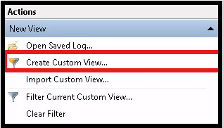
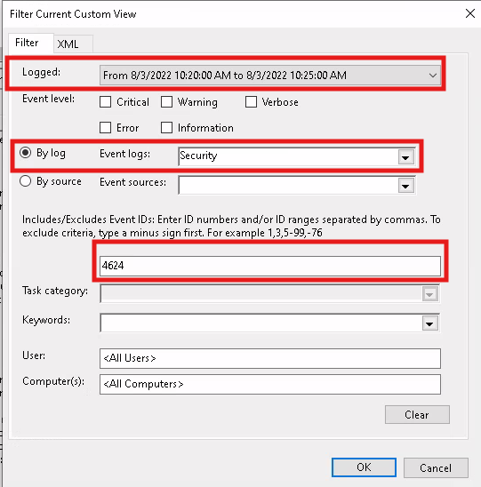
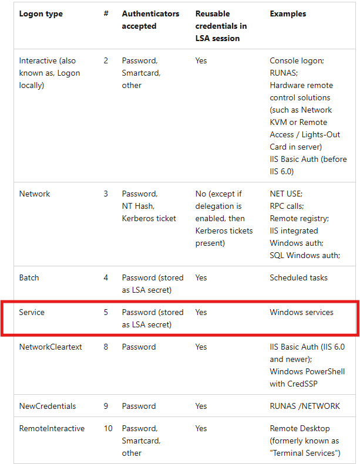
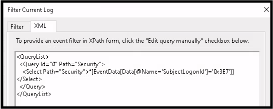
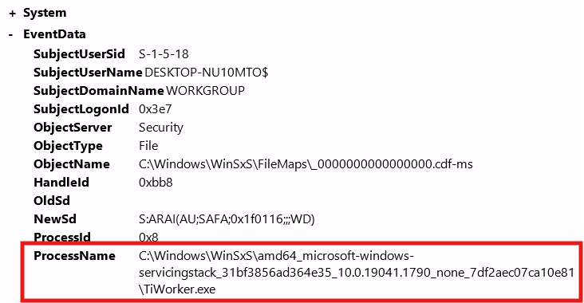

-
Locating logon event, Event ID 4624, at a given time
Created a custom filter to quickly find the event of interest. Take note of the Logon Type and Logon ID. Research what Logon Type 5 means...
Described by HTB as, "it specifies a Service logon type, suggesting that "SYSTEM" initiated a new service"
Now look for other events made by the specified user. Using a custom view was preventing me from filter the current event view. Workaround is to find the event manually.
Clear all filters. Open up Windows Log. This time "Filter Current Log..." and search the same parameters as before.



-
Alternative Method Required to Filter the Current Log
Open the event of interest. Select the XML tab and 'Edit query manually'. Analyze the current XML filter text.
See picture below for the new text required to find events by the suspect user. It is case sensitive!!!

-
Useful Windows Event Log IDs
Windows System Logs:
Event ID 1074System Shutdown/Restart
Event ID 6005Event log service was started
Event ID 6006Event log service was stopped
Event ID 6013Windows uptime
Event ID 7040Service status change
Event ID 1102Audit log was cleared
Event ID 1116Antivirus malware detection
Event ID 1118Antivirus remediation started
Event ID 1119Antivirus remediation succeeded
Event ID 1120Antivirus remediation failed
Event ID 4624Successful Logon
Event ID 4625Failed Logon
Event ID 4648Logon using explicit credentials
Event ID 4656Handle to an object requested
Event ID 4672Special Privileges Assigned
Event ID 4698Scheduled task created
Event ID 4700Scheduled task enabled
Event ID 4701Scheduled task disabled
Event ID 4702Scheduled task updated
Event ID 4719Audit policy changed
Event ID 4738User account changed
Event ID 4771Kerberos pre-authentication failed
Event ID 4776Domain controller attempted to validate credentials
Event ID 5001Antivirus real-time protection configuration changed
Event ID 5140Network share object accessed
Event ID 5142Network share object added
Event ID 5145Network share access check
Event ID 5157Windows Filtering Platform blocked a connection
Event ID 7045Service installed
-
Locating logon event at a given time
We are looking for a Event ID 4907, for Audit Policy Change, but there are a ton so look around the same time period as our logon event. Bingo.
Next task is even more difficult since I am not comfortable with XML syntax. We are looking for an event where the previously found executable modified the audit settings of a dll file.
The event we want has the same event ID. The process name is the executable. The object name is the dll file.
I'm going to start off with a syntax just mentioning looking for the object name. Returned 2 results. G2G.


Today we practiced filtering for events of interest which required research on various Event IDs and XML syntax. Google was a good resource for the Event IDs and AI was sort of a cheat code for the XML. However, there are plenty of resources for writing correct XML syntax and using the regular filter tab in "Filter Current Log" will automatically fill in the query on the XML tab.